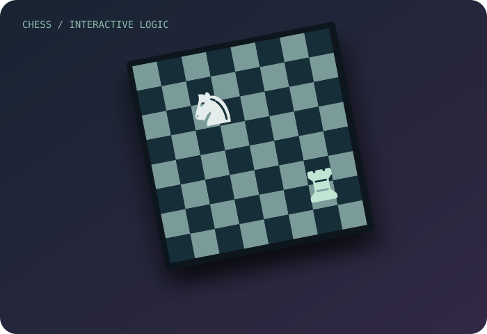
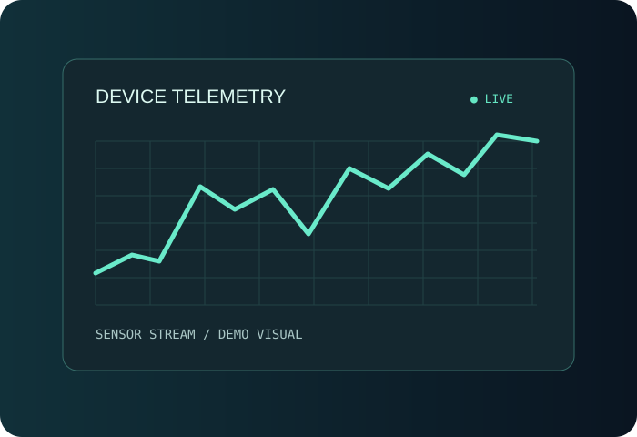

3D / GENERATIVE WORLD01 / 03
FULL STACK SOFTWARE ENGINEER / BRAZIL
Engineering the unexpected.
Transformo problemas complexos em sistemas robustos, interfaces intuitivas e experiências digitais que as pessoas querem explorar.
PAULO_SOAF / EST. 2026SCROLL TO EXPLORE ↓
01 / SELECTED WORK
Featured projects.
Construindo desde aplicações em tempo real até mundos digitais. Projetos reais, apresentados com contexto e profundidade.

INTERACTIVE APPLICATION02 / 03

FULL STACK / IOT03 / 03
01 / 03DRAG / KEYBOARD / PAUSE
02 / THE JOURNEY
More than code.
Da engenharia de software corporativo à computação gráfica. Uma jornada orientada por sistemas que funcionam e experiências que fazem sentido.
EXPERIENCE / 01
Engenharia de aplicações
Experiências em aplicações Full Stack, arquitetura de interfaces, integração com APIs e desenvolvimento orientado a requisitos reais.
ReactTypeScript.NET
CHAPTER 01 / 03
03 / EXPERIMENTAL LAB
Enter the universe.
POC conceitual do Explore Mode opcional. Os pontos representam projetos reais; a navegação final será construída com R3F somente depois do MVP.
SELECTED / 01
Universo procedural e exploração espacial usando renderização web.